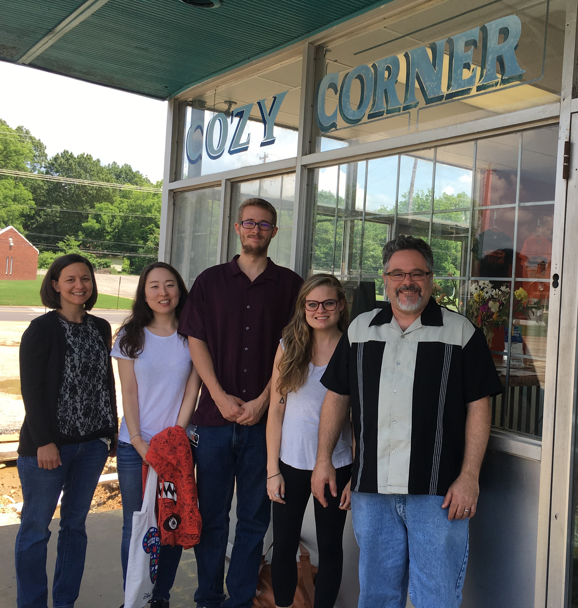
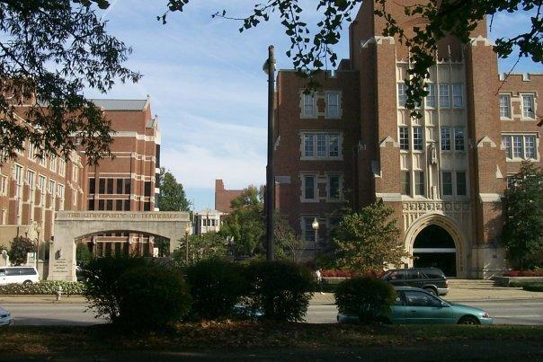
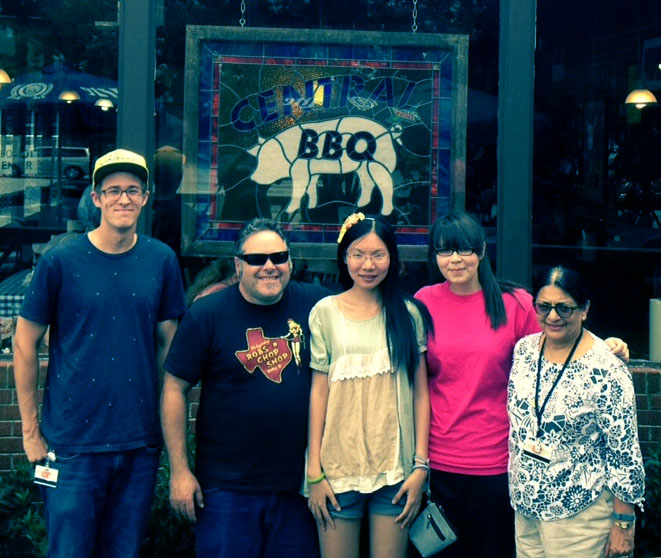
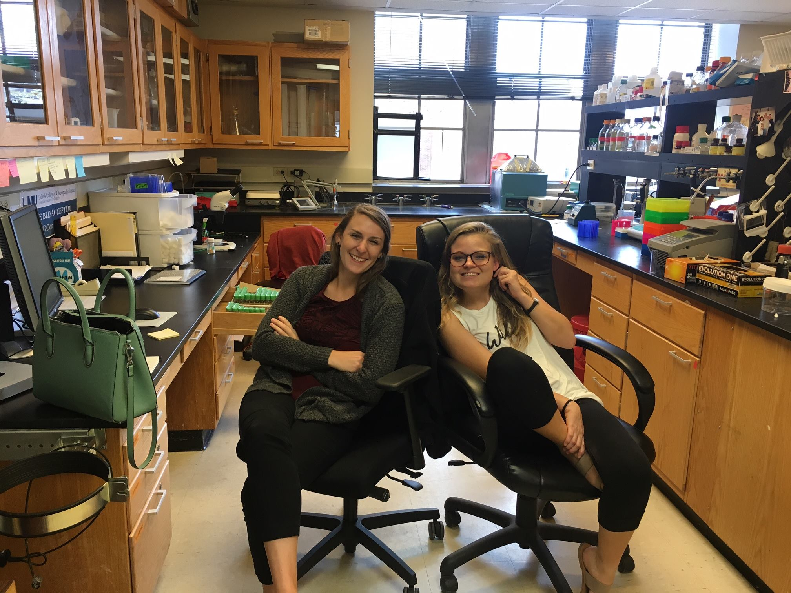
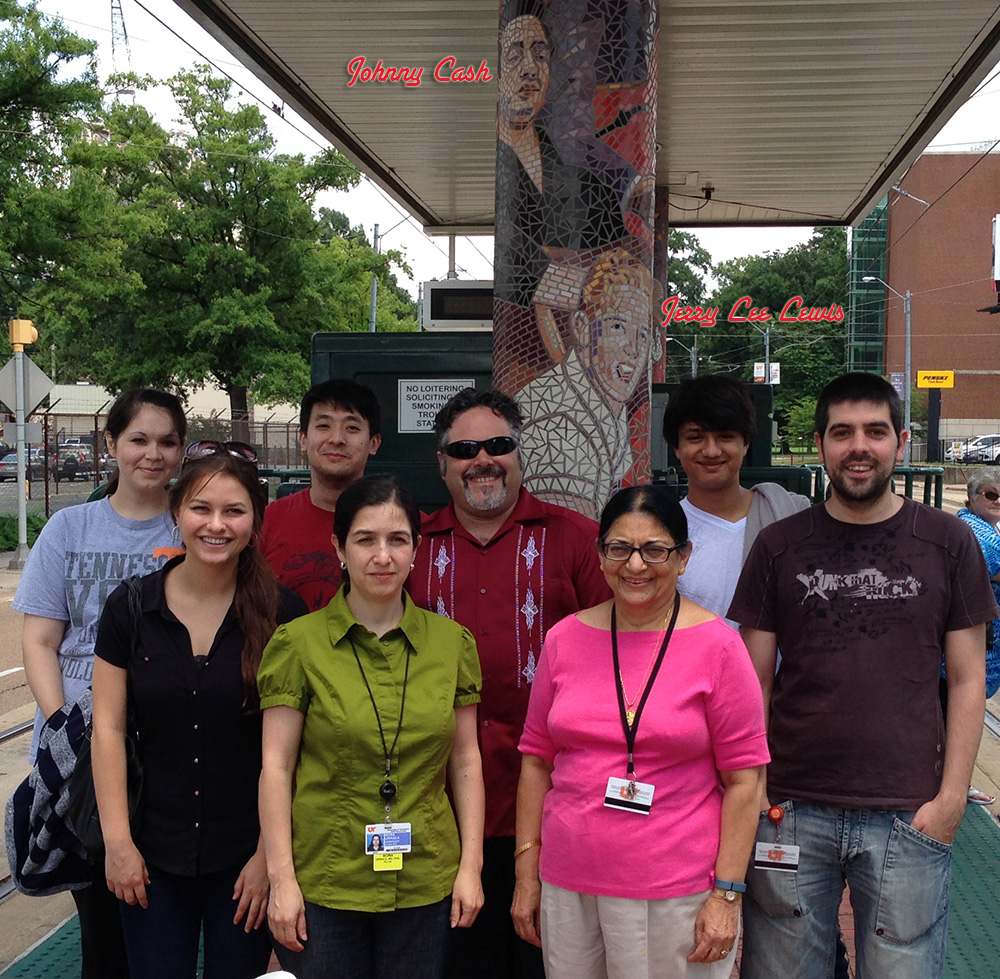
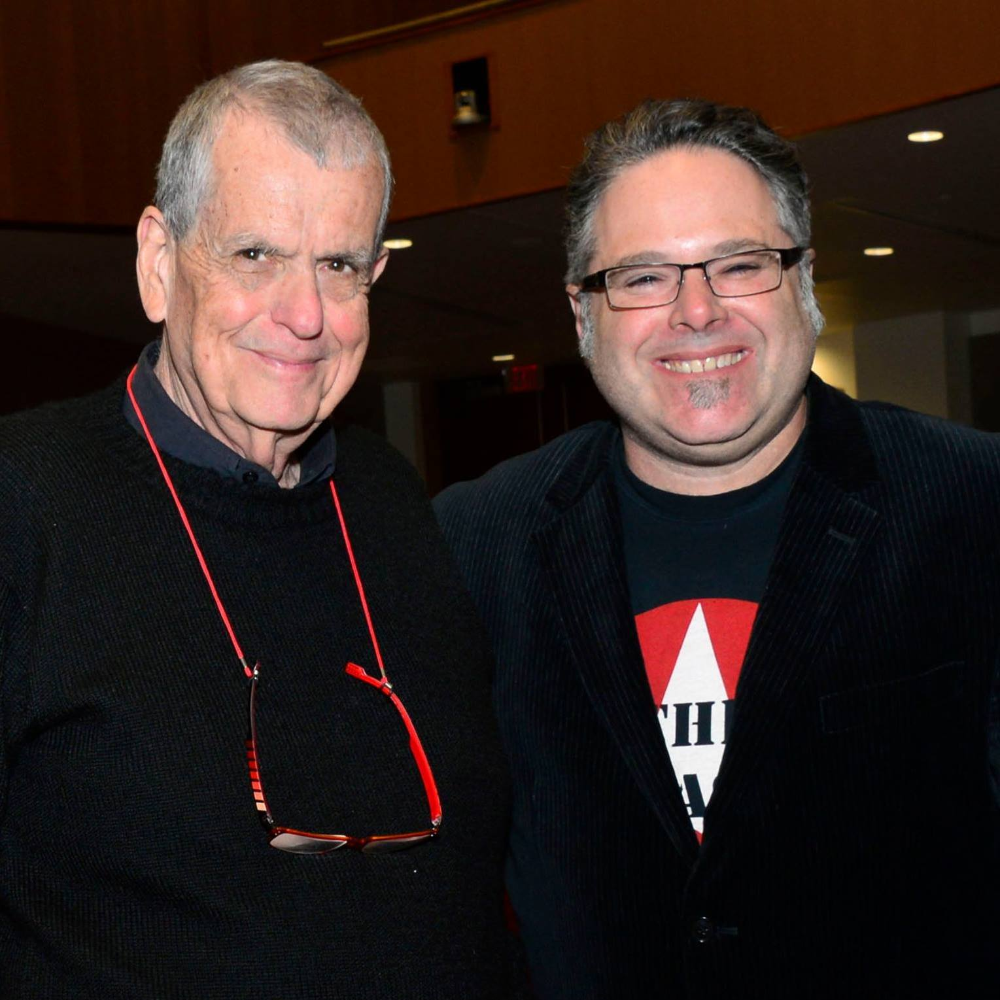
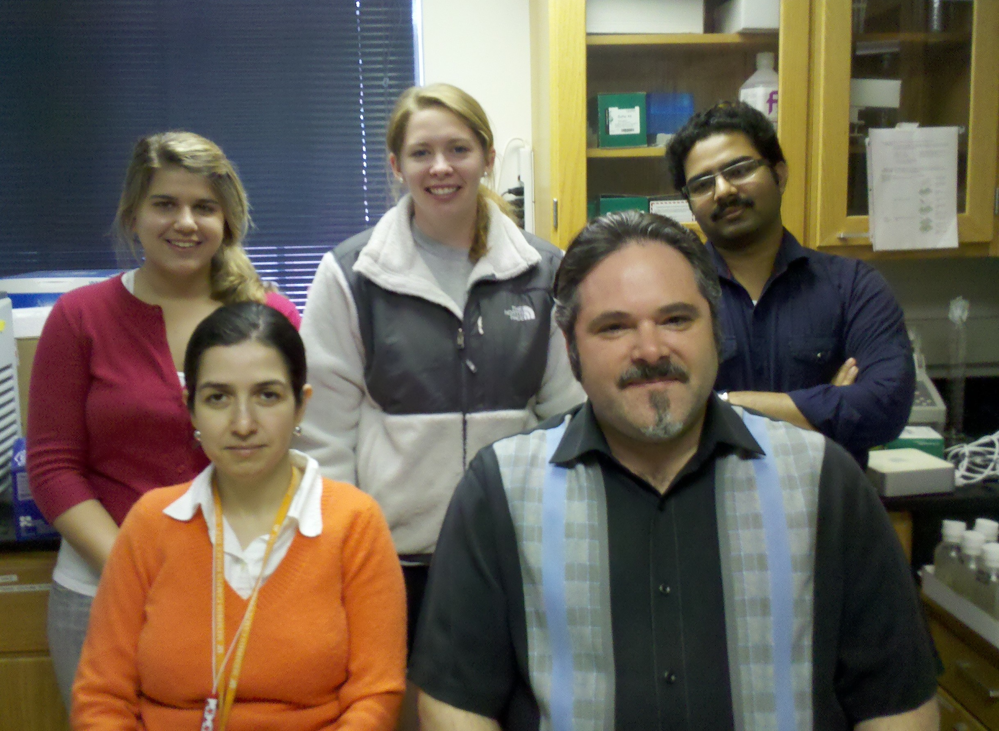
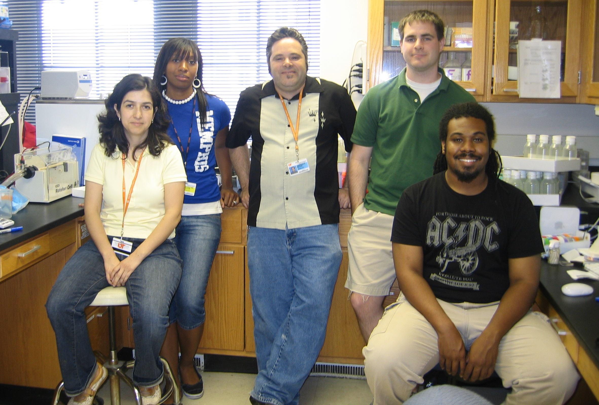

Reiter Lab cicra 2018

The University of Tennessee Health Science Center

Reiter Lab circa 2015

Kaitlyn and Morgan in the lab.

Reiter Lab circa 2014

Meeting Nobel Laureate Aaron Ciechanover

Reiter Lab circa 2011

Legendary SUN Studio - right down the street.
